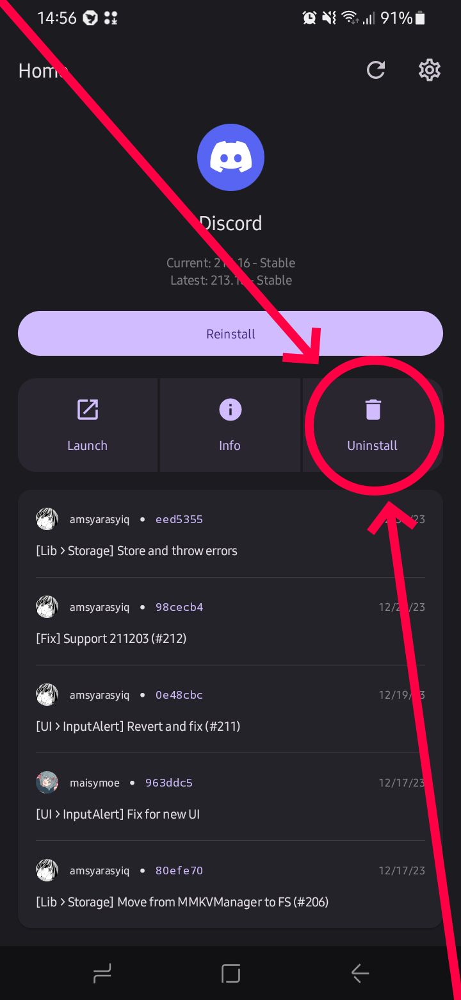

you need to enter version in following format:
XXXbxx
XXX = major version (for example, 206)
b = version channel; 0 for stable, 1 for beta and 2 for alpha (for example, 0)
xx = minor version (for example, 16)
using this, 206.16 (stable) will be 206016, 213.16 (stable) will be 213016, etc.
you can save your plugins using "CloudSync" plugin and then load them back when you downgraded
that's all, you now have older version of vendetta!
to install latest version again, repeat all the steps again, but in step 5 you need to erase everything in 'Discord version' field